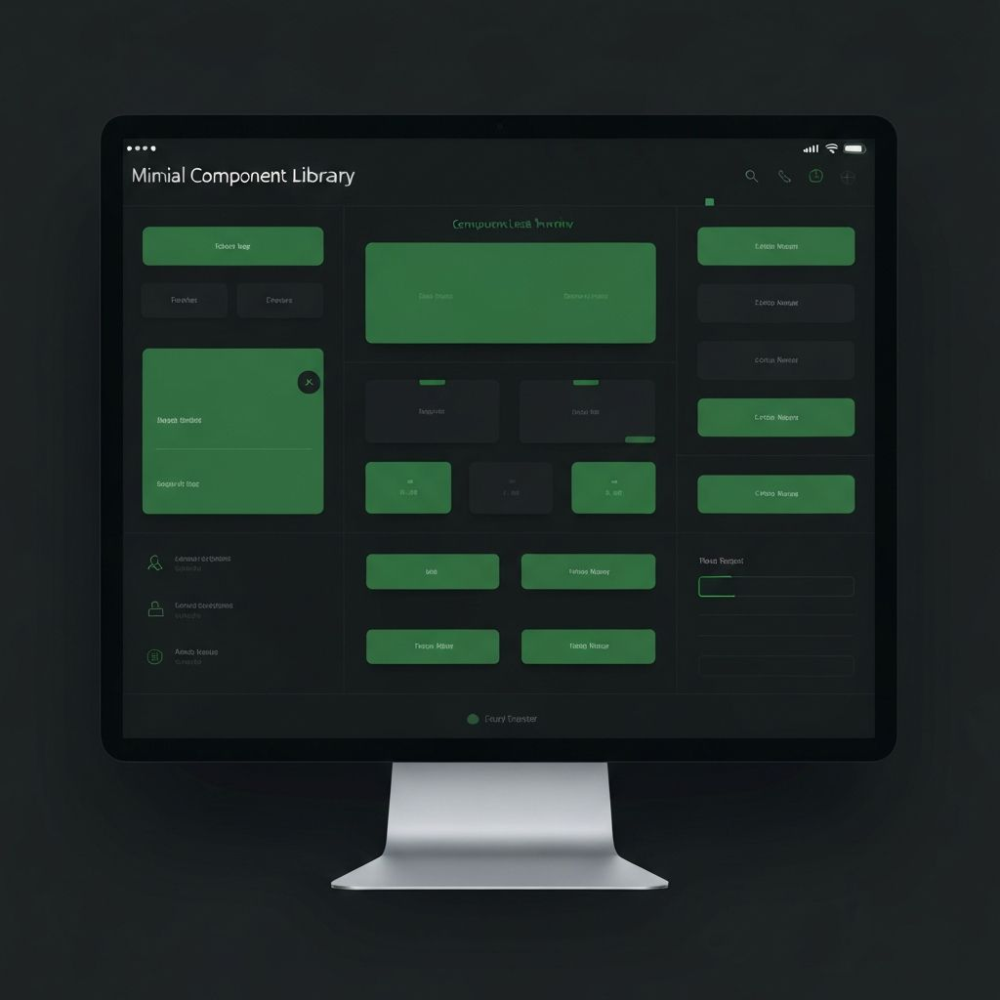
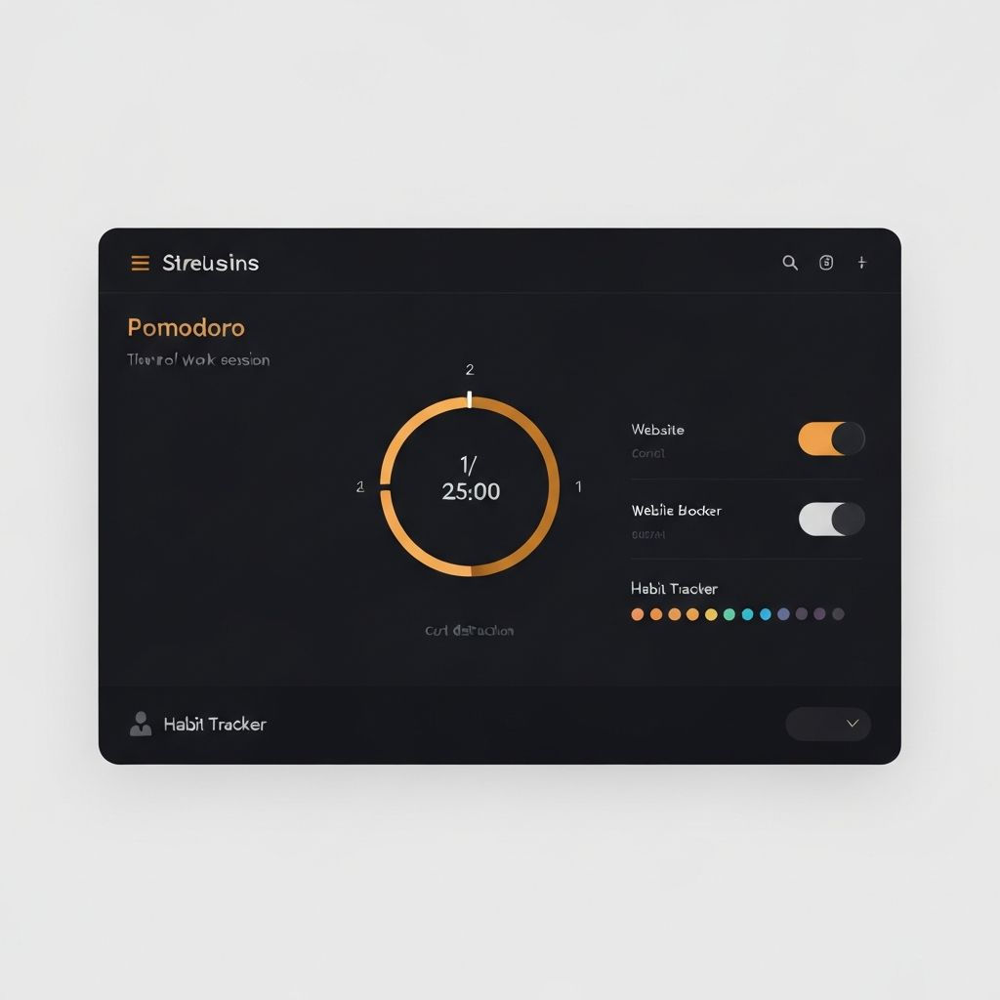
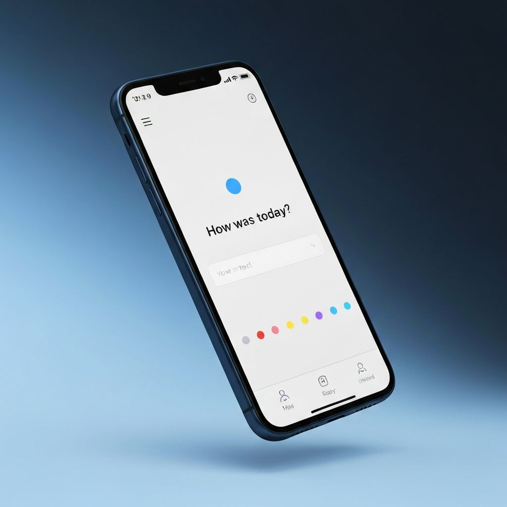
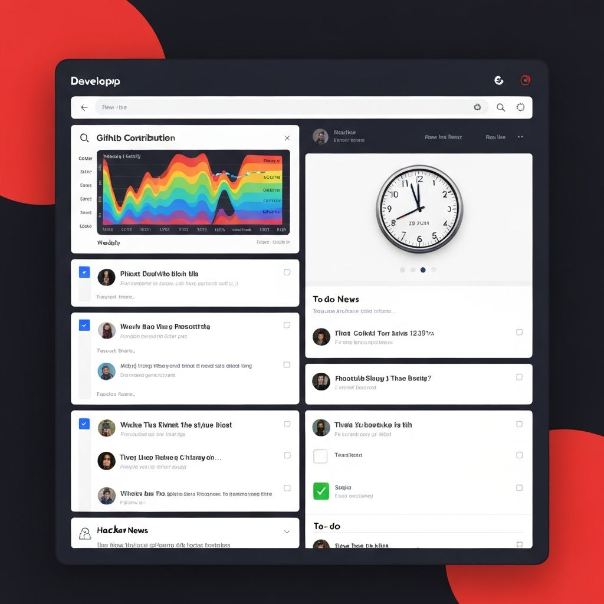

校园互联
一个帮助同学组建学习小组、分享学习资源、展开协作项目的全栈学生社交平台。在一次黑客松中用 4 周时间从零打造，目前服务 1200+ 在校学生。
查看案例详情这里收录了我从构思到部署亲手设计和开发的一系列项目。点击任意卡片可查看完整的项目案例分析。
一个帮助同学组建学习小组、分享学习资源、展开协作项目的全栈学生社交平台。在一次黑客松中用 4 周时间从零打造，目前服务 1200+ 在校学生。
查看案例详情
一个极简、深色优先的组件库，包含 Figma 源文件、CSS 变量体系与可交互的文档网站。
查看案例详情
一款效率型 Chrome 扩展，在干净的 UI 中整合番茄钟、网站拦截与习惯追踪三大功能。
查看案例详情
一款为 iPhone 设计的极简每日日记应用概念，聚焦无摩擦的记录体验与优雅的心情可视化。
查看案例详情
一款专属开发者的个人面板，聚合 GitHub 动态、Hacker News 资讯与每日任务清单，支持自定义布局。
查看案例详情一次关于"无摩擦日记应用"的纯粹设计探索。核心洞察：大多数日记应用问得太多。DayLog 只以一个文本框开始 —— 心情标签、天气、位置等一切其他信息，都是可选的、次要的。